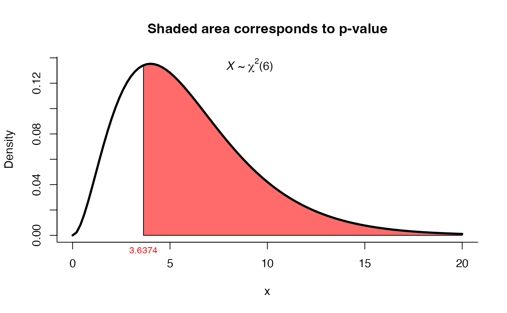

Test for \(\Sigma\) in a \(Np(\mu, \Sigma)\)
one_covar_matrix_test.RdThis function can be used to test \(H_0: \Sigma = \Sigma_0\) versus \(H_1: \Sigma\) not = \(\Sigma_0\).
one_covar_matrix_test(Sigma0, S, n, method = "lrt")
Arguments
| Sigma0 | a matrix indicating the hypothesized value of the covariance matrix \(\Sigma\). |
|---|---|
| S | a matrix with sample variances and covariances. |
| n | sample size. |
| method | a character string specifying the method, it must be one of |
Value
A list with class "htest" containing the following components:
the value of the statistic.
the degrees of freedom for the test.
the p-value for the test.
the estimated covariance matrix S.
a character string indicating the type of test performed.
Details
When method="lrt" (default) the function performs the LRT test given in Mardia et. al (1979), page 126, expression 5.2.7. For method="modlrt1" or method="modlrt2" the function performs the LRT test given in Rencher and Christensen (2012), page 260, expressions 7.2 and 7.4.
See also
one_mean_vector_test for test \(\mu\) in a \(Np(\mu, \Sigma)\).
Examples
# Example 5.3.2 from Mardia (1979) page 127 # Test H0: Sigma = diag(100, 100) versus H1: Sigma != diag(100, 100) Sigma0 <- matrix(c(100, 0, 0, 100), ncol=2) S <- matrix(c(91.481, 66.875, 66.875, 96.775), ncol=2) res1 <- one_covar_matrix_test(Sigma0=Sigma0, S=S, n=25, method='lrt') res1#> #> LRT test for Sigma matrix #> #> data: this test uses summarized data #> lrt = 17.698, df = 3, p-value = 0.0005077 #> alternative hypothesis: true Sigma matrix is not equal to Sigma0 #> #> sample estimates: #> xbar_1 xbar_2 #> xbar_1 91.481 66.875 #> xbar_2 66.875 96.775 #># Example from Morrison (1990) page 293 # Test H0: Sigma = Sigma0 versus H1: Sigma != Sigma0 # using the modified LRT test versions n <- 20 Sigma0 <- matrix(c(4, 3, 2, 3, 6, 5, 2, 5, 10), ncol=3) S <- matrix(c(3.42, 2.60, 1.89, 2.60, 8.00, 6.51, 1.89, 6.51, 9.62), ncol=3) res2 <- one_covar_matrix_test(Sigma0=Sigma0, S=S, n=n, method='modlrt1') res2#> #> Modified LRT test for Sigma matrix #> #> data: this test uses summarized data #> lrt = 3.6374, df = 6, p-value = 0.7256 #> alternative hypothesis: true Sigma matrix is not equal to Sigma0 #> #> sample estimates: #> xbar_1 xbar_2 xbar_3 #> xbar_1 3.42 2.60 1.89 #> xbar_2 2.60 8.00 6.51 #> xbar_3 1.89 6.51 9.62 #>res3 <- one_covar_matrix_test(Sigma0=Sigma0, S=S, n=n, method='modlrt2') res3#> #> Modified LRT test for Sigma matrix with moderate n #> #> data: this test uses summarized data #> lrt = 3.43, df = 6, p-value = 0.7533 #> alternative hypothesis: true Sigma matrix is not equal to Sigma0 #> #> sample estimates: #> xbar_1 xbar_2 xbar_3 #> xbar_1 3.42 2.60 1.89 #> xbar_2 2.60 8.00 6.51 #> xbar_3 1.89 6.51 9.62 #>